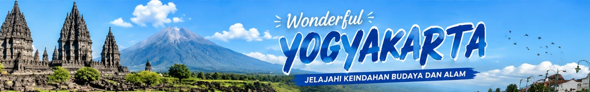
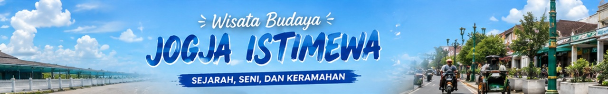

Yogyakarta

Jogja, Kota yang Tak Pernah Tidur
Yogyakarta atau Jogja adalah salah satu pusat kebudayaan Jawa yang masih sangat kental. Kota ini menjadi tempat tinggal Sultan dan keraton yang masih aktif hingga kini, menjadi penjaga tradisi Jawa yang telah berlangsung berabad-abad.
Keajaiban arkeologi seperti Candi Borobudur (candi Buddha terbesar di dunia) dan Candi Prambanan (kompleks candi Hindu terbesar di Indonesia) menjadikan Yogyakarta sebagai destinasi warisan dunia UNESCO.
Jangan lupakan kuliner legendaris seperti Gudeg, Bakpia Pathok, dan Wedang Ronde yang menjadi daya tarik tersendiri. Malioboro tetap menjadi jantung kota yang tak pernah sepi pengunjung.